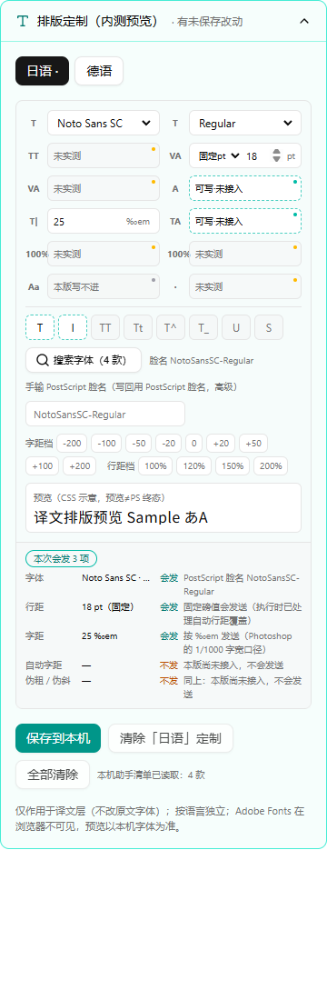
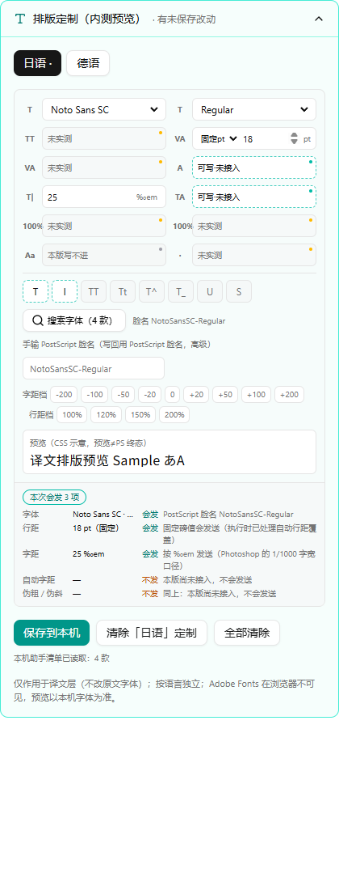
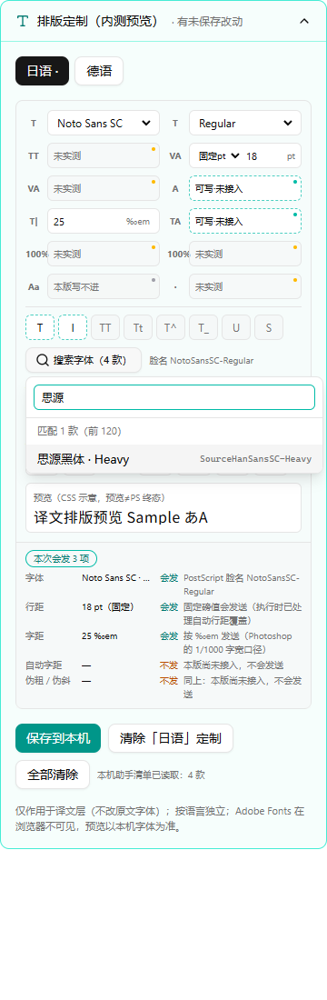
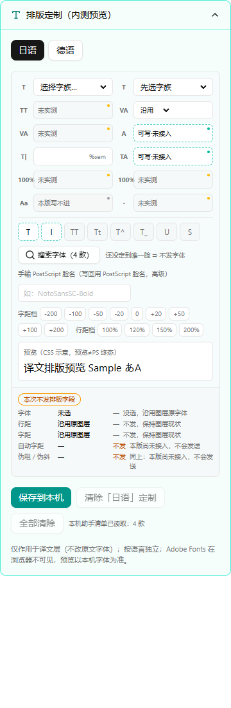

面板现在只列本机真实存在的字族与样式，选到唯一 PostScript 脸名；结算条直接按映射函数的真实产出报“会发几项”；本版 Photoshop 写不进的页签已按 Owner 当日令从界面撤下，不展示不可用入口。360/420 真视口量宽 24 项全过，过程中发现搜索浮层被按钮宽度压到约 128px，已修复并复量到 328/340px。
v4 六步全部落地，门禁全绿；其中 W4-5 按 Owner 2026-10-18 令改为撤下不可写页签（对外不可见）。唯一未过的是发布预检的“干净树”前置——原因是没有提交，不是代码失败；提交后即可复跑。
test:typography-picker 断言＋RTL 用例，rc=0tsc 错误；lint 0 error（33 warning 不在本轮文件）字族下拉只列本机清单里真实存在的族；样式下拉只列该族真实存在的样式；换族时优先同名样式、其次 Regular，最终携带 PostScript 脸名。搜索浮层按 APG combobox 键盘模型（方向键预览、Enter 应用、Esc 关闭）。手输脸名保留为高级入口，提交前仍过一次脸名校验，不合规就不发字体。
sendCount 直接取映射函数真实产出的键数；“会发”的键集必须等于下发体的键集，不一致时面板显示“内部错误，请报告”。未定到唯一脸、行距缺数值、字距非整数、自动字距/伪粗伪斜未接入，都明确标“不发”，不混进会发数。
对四个源码文件扫对齐/缩进/段前后/语言/大小写的赋值与对象键写法，出现即红；自带负控（塞一行必须被抓）和正控（变量名不误伤），证明守卫不是空跑。对应本版 PS 写不进的字段，代码层就不产生写请求。
界面可按 ‰em 或 % 输入/显示，落到 profile 的永远是整数 ‰em（1% = 10‰em）。测试含“把显示值直接下发会变 1/10”的负控，锁住切换往返不变值。
本版 Photoshop 写不进的能力不对外露出：面板展开后直接进入字符面板，页签条与“永远锁死”说明已删除；能力清单不再导出段落数据，结算条也不再列段落项。静态守卫改为反向断言（面板与能力清单不得出现页签、段落字样或不可写控件表），并带负控证明能抓回旧代码。W4-3 的 8 字段禁止写入守卫保持不变。
两列栅格用 minmax(0,1fr)，长字体名不撑破；面板无固定 min-width；输入/下拉用真实主题令牌 bg-background。真浏览器两档：360 根容器 360/360、面板 358/358；420 根容器 420/420、面板 418/418；无控件越界、无控制台错误。缺陷：搜索浮层原来用 max-w-full，真实 Chrome 里相对按钮的收缩包裹层计算，被压到约 128px；改为按视口收口后，360 档 328px、420 档 340px。静态断言已同步锁住防回潮。
npm run test:typography-picker → 195 断言 + 4 用例；npm run test:feature-flag-whitelist → 54+63+86+195+44+25 断言 + 4 用例；npx tsc --noEmit → rc=0；npm run lint → rc=0（0 error / 33 warning，均不在本轮 6 个文件）；npm run test:batch-row-contract → all assertions passed；npm run test:trust-chain → rc=0（含 delivery-coverage all assertions passed）。
npm run release:preflight:test 唯一报错：working tree must be clean。该脚本设计为先查干净树、再跑测试门；本轮按指令未提交，所以停在这一步，不代表代码失败。提交后可原地复跑。




改：typography-panel.tsx（+377/−89）、typography-persistence.ts（+53/−12，新增行距模式，兼容旧数据）、smoke-typography-faces.mjs（+3/−1）、package.json（+2/−1）。新：font-picker.tsx（248 行）、typography-capabilities.ts（445 行）、smoke-typography-picker.mjs（350 行 / 195 断言）、typography-picker.test.tsx（77 行 / 4 用例）。
在 worktrees/develop 根执行 npm run test:typography-picker 与上述六条门禁。像素探针须从仓库根启动临时夹具（否则 Tailwind 扫不到源码，量到的是无样式页面），再用 Playwright 以 360/420 真视口量根容器、面板、控件越界与浮层宽度。